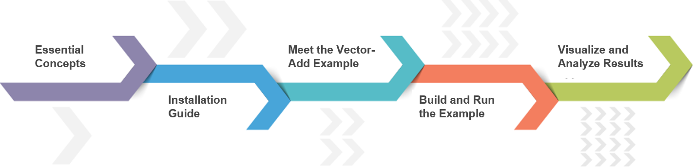
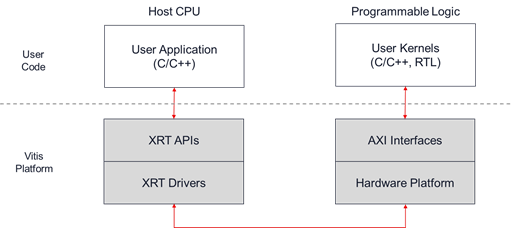

Vitis™ アプリケーション アクセラレーション開発フロー チュートリアル |
Vitis™ 入門チュートリアル¶
バージョン: Vitis 2022.1

Vitis 入門チュートリアルへようこそ。Vitis ツールは、データセンターまたはエンベデッド プロセッサプラットフォームのいずれかをターゲットとした FPGA アクセラレーション アプリケーションを開発するための統合フローを提供します。これは、FPGA アクセラレーションを開始するために Vitis アプリケーション アクセラレーション開発フローの詳細を知るには、最適なチュートリアルです。
このチュートリアルは、データセンター フローおよびエンベデッド プロセッサ フローの 2 つのフローに分かれています。この 2 つのフローはどちらも、1 つのフロー用に書かれたホスト アプリケーションと高速化されたカーネルをもう 1 つのフローに使用できる点で類似し、ビルド プロセスも似ています。類似点だけでなく、相違点もあり、データセンター アクセラレータ カードとエンベデッド プロセッサ プラットフォームのビルドおよびランタイム環境で、それぞれに異なる要件を満たす必要があります。
このチュートリアルでは、Alveo U200 データセンター アクセラレータ カードと、Zynq UltraScale MPSoC ZCU102 プラットフォームの両方でビルドおよび実行する手順について説明します。これらの手順は、ほかのザイリンクス カードでも簡単に使用できます。
このチュートリアルで説明する 2 つのフローはどちらも、5 つのパートで構成されており、Vitis フローのすべての重要な側面を説明する目的で設計されています。
パート 1: Vitis FPGA アクセラレーション フローの基本的な概念を 10 分以内で説明します。
パート 2: Vitis ツール、プラットフォーム、およびランタイム ライブラリのインストール手順を説明します。
パート 3: 残りのチュートリアルで使用される vector-add 例のソース コードについて説明します。
パート 4: データセンター アクセラレータ カード フローとエンベデッド プラットフォーム フローを説明します。各フローで、アクセラレータ カードでのコンパイル、リンク、および実行に必要なコマンドを説明します。
パート 5: Vitis アナライザーの概要と解析レポートの開き方と解析方法について説明します。
パート 1: 基本概念¶
Vitis 統合ソフトウェア プラットフォームは、C や C++ のような標準プログラミング言語を使用して FPGA でアクセラレーションされたアプリケーションを開発して配布するためのフレームワークを提供します。Vitis フローには、次のような標準ソフトウェア開発環境の機能がすべて含まれています。
x86 または Arm® プロセッサで実行されるホスト アプリケーション用のコンパイラまたはクロス コンパイラ
FPGA バイナリをビルドするためのクロス コンパイラ
コードの問題を特定して解決するのに役立つデバッグ環境
ボトルネックを特定し、アプリケーションを最適化するのに役立つパフォーマンス プロファイラー
Vitis プログラミングおよび実行モデルの理解¶
Vitis でアクセラレーションされたアプリケーションには、X86 プロセッサや Arm エンベデッド プロセッサなどの標準プロセッサで実行されるソフトウェア プログラムと、ハードウェア アクセラレーションされた関数またはカーネルを含むザイリンクス デバイス バイナリ (xclbin) の 2 つのコンポーネントで構成されています。
ソフトウェア プログラム、またはホスト アプリケーションは C/C++ で記述され、従来の CPU 上で動作します。ソフトウェア プログラムは、ザイリンクス ランタイム ライブラリ (XRT) でインプリメンテーションされた XRT native API、または OpenCL 1.2 C/C++ API を使用して、ザイリンクス デバイスのアクセラレーション カーネルとやりとりします。ホスト アプリケーションと必要な API コールの詳細は、ホスト プログラミングを参照してください。
ハードウェア アクセラレーション カーネルは、C/C++ または RTL (Verilog または VHDL) で記述して、ザイリンクス デバイスのプログラマブル ロジック部分内で実行できます。コード要件の詳細は、Vitis 資料の C/C++ カーネルまたは RTL カーネルを参照してください。カーネルは標準 AXI インターフェイスを使用して Vitis ハードウェア プラットフォームと統合されます。

Vitis でアクセラレーションされたアプリケーションは、データセンターまたはエンベデッド アクセラレーション プラットフォームのいずれかで実行できます。
データセンター アクセラレータの場合、ソフトウェア プログラムは x86 サーバー上で実行され、カーネルは PCIe の接続されたアクセラレーション カード上の FPGA 内で実行されます。
エンベデッド プロセッサ プラットフォームの場合、ソフトウェア プログラムはザイリンクス MPSoC デバイスの Arm プロセッサ上で動作し、カーネルは同じデバイス内で動作します。
Vitis アプリケーションのソフトウェアおよびハードウェア コンポーネントは、標準化されたインターフェイス (XRT API および AXI プロトコル) を使用してやりとりするため、ユーザーのソース コードがプラットフォーム固有の詳細情報にほとんど依存しないので、異なるアクセラレーション プラットフォーム間で容易に移植ができるようになっています。
ソフトウェア プログラムがハードウェア カーネルとやりとりする方法は複数あります。最も簡単な方法では、次が実行されます。
ホスト アプリケーションがカーネルで必要とされるデータを FPGA デバイスのグローバル メモリに書き込みます。
ホスト プログラムが、カーネルの入力パラメーターを設定します。
ホスト プログラムがカーネルの実行をトリガーします。
カーネルは必要な計算を実行し、必要に応じてグローバル メモリにアクセスしてデータの読み書きをします。カーネルはまた、ほかのカーネルとの通信にストリーミング接続を使用し、1 つのカーネルから次のカーネルを渡します。
カーネルがホストにタスクが完了したことを通知します。
ホスト プログラムは、グローバル メモリからホスト メモリにデータを転送するか、または別のカーネルにデータの所有権を譲渡します。
Vitis ビルド プロセスの理解¶
Vitis ビルド プロセスでは、ホスト プログラムとカーネル コードの両方に対して標準のコンパイルおよびリンク プロセスに従います。
ホスト プログラムは、データセンター アプリケーション用の GNU C++ コンパイラ (g++) またはエンベデッド プロセッサ デバイス用の GNU C++ Arm クロス コンパイラを使用してビルドされます。
FPGA バイナリは、Vitis コンパイラ (v++) を使用してビルドされます。まず、カーネルはザイリンクス オブジェクト (.xo) ファイルにコンパイルされます。その後、.xo ファイルがハードウェア プラットフォームにリンクされ、ザイリンクス デバイス バイナリ (.xclbin) ファイルが生成されます。Vitis コンパイラ コマンドで説明されているように、Vitis コンパイラとリンカーは、さまざまなオプションを適用して、結果を調整および最適化します。

Vitis ビルド ターゲットの理解¶
Vitis コンパイラには、デバッグおよび検証に使用する 2 つのエミュレーション ターゲット、および実際の FPGA バイナリを生成するのに使用されるデフォルトのハードウェア ターゲットの 3 つのビルド ターゲットがあります。
ソフトウェア エミュレーション - カーネル コードは、ホスト プロセッサ上で実行されるようにコンパイルされます。これにより、ビルドと実行を高速に繰り返して反復アルゴリズムで調整していくことができます。このターゲットは、構文エラーを特定し、アプリケーションと共に実行されるカーネル コードをソース レベルでデバッグし、システムの動作を検証するのに便利です。
ハードウェア エミュレーション - カーネル コードがハードウェア モデル (RTL) にコンパイルされ、専用シミュレータで実行されます。ビルドおよび実行ループにかかる時間は長くなりますが、詳細でサイクル精度のカーネル アクティビティが表示されます。このターゲットは、FPGA に配置するロジックの機能をテストして、初期パフォーマンス見積もりを取得する場合に便利です。
ハードウェア - カーネル コードがハードウェア記述言語 (RTL) にコンパイルされ、その後、ターゲットのザイリンクス デバイス用に合成およびインプリメントされて、実際の FPGA で実行されるバイナリ ファイル (
xclbin) が生成されます。
ヒント: エミュレーションの実行で説明されているように、データセンター プラットフォームとエンベデッド プロセッサ プラットフォームとではビルドおよびランタイムの環境に大きな違いがあります。これらの 2 つのフローについては、次のセクションで詳しく説明します。
次の手順¶
ライセンス規約
Apache ライセンス、バージョン 2.0 (以下「ライセンス」) に基づいてライセンス付与されています。本ライセンスに準拠しないと、このファイルを使用することはできません。ライセンスのコピーは、http://www.apache.org/licenses/LICENSE-2.0 から入手できます。
適切な法律で要求されるか、書面で同意された場合を除き、本ライセンスに基づいて配布されるソフトウェアは、明示的または黙示的を問わず、いかなる種類の保証または条件もなく、「現状のまま」配布されます。ライセンスに基づく権限と制限を管理する特定の言語については、ライセンスを参照してください。
Copyright© 2020-2022 Xilinx